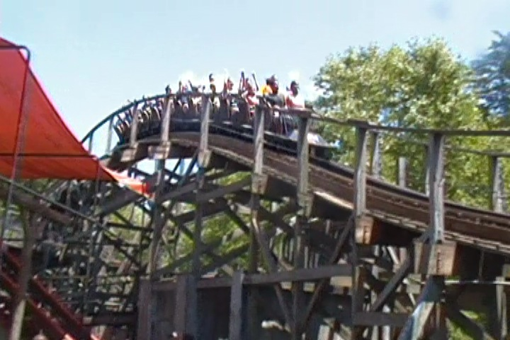
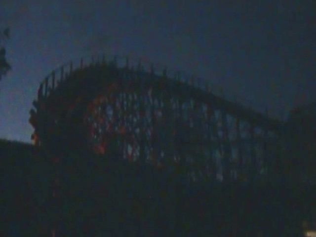
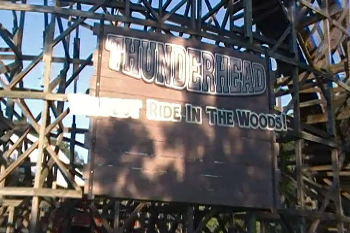
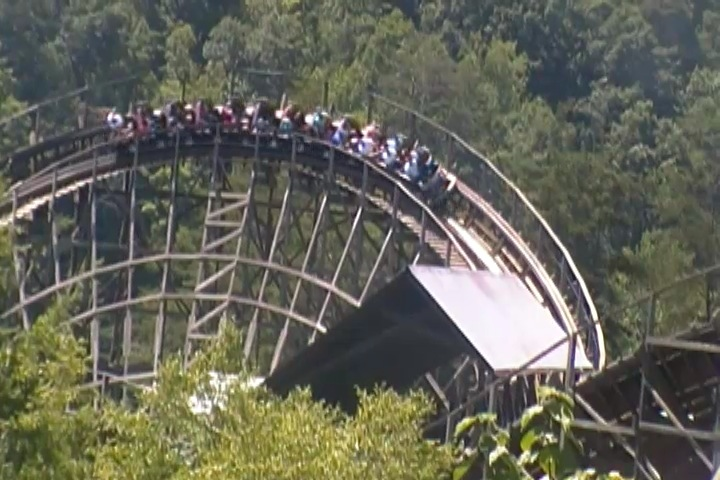

| |
Thunderhead Review

We're here at Dollywood. Today, we're here to review Thunderhead, my favorite GCI, and yeah. It's amazing. I know one of the best wooden coasters in the world is right next door, so it's easy to be jaded. But Thunderhead still is a really great ride! =) So hop in the trains, pull down the lap bar, and we're off. We roll around a turn, that sort of is a downward helix, leading us right into the lifthill. It's not that big, but while going up, we see the twisted mess of wooden track that we're about to embark on. Eventually, we reach the top and head down the first drop. It's a curved first drop, and while it doesn't look like anything special, boy does this thing pick up a lot of speed. So yeah. We're flying at this point. We then head up a curved hill. Now it's not super big, so we don't lose a ton of speed. However, it is worth noting, that the curve is in the opposite direction. So you get some laterals going into the curve. And at the top, we turn in the opposite direction. So yeah. Slam right back into the other side. Ooh. This ride has laterals. I like that. We go around the curve and down another curved drop to the ground. We go around a slight curve and up a smallish hill. Not big enough to take away a ton of speed, but you notice it. We go around a curve and go down another drop right down into a turn. Yeah. This ride has a ton of turns, laterals, and speed. I'm really liking this. But if you're looking for airtime? No worries. We go over a small hill that gives us a nice pop of airtime. And it's really good airtime. We then head around this curve that does a pretty good job of giving us even more laterals. And yeah. This is really good. We pop out and go into some straight track, in what is the station fly by. TAKE THE STATION!!!! We go up another small curved hill. This one is powerful enough to give us both some laterals and some airtime. A combination I always enjoy. Go around the turn, drop back down to the ground, and through another slight turn and into a bunny hop. So yeah. This is a series of bunny hops, only through in some turning while doing so. We go around a turn, roaring through, still flying, and dip down. Go through a bump and into this S Curve. And yeah. Thunderhead really knows how to lay on the laterals. We go around a turn, dip back down, and curve up again. Unfortunatly, we're now losing speed and...yep. Right into the brake run. Yeah. I love Thunderhead. Not only does it have great laterals, never loses its speed, and is in a cool setting. But in a way, this is the first modern GCI Woodie. Yeah. There were plenty of woodies before it, but this was the first one that sort of set up the standard twisty GCI layout. I mean, this is literally the first coaster to have ever had the Station Flyby. Ever since Thunerhead, that thing is now a staple on GCI woodies. So in a way, Thunderhead is kind of historical. And yeah. It's just a fantastic GCI. OK, this ride isn't nearly as good as Lightning Rod, but...come on! That's an unfair comparison! Definetly give it a ride when at Dollywood.
8/10
Location: Dollywood
Opened: 2004
Built by: Great Coasters International
Last Ridden: July 24, 2019
Thunderhead Photos




Home
|